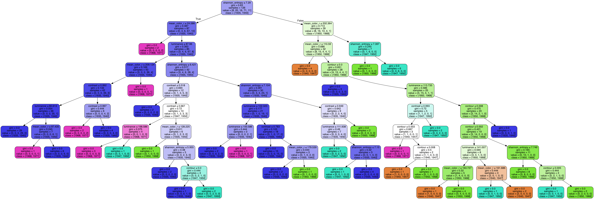

Machine Learning Models
We've built Supervised Machine Learning Models to predict the time period in which a painting by a specific artist
was created. For each of the artist, we have models based on the Decision Tree Classification Algorithm
and a Random Forest Classifier. We used python's image processing libraries to generate metrics based on
the available art images. These are metrics that indicate the complexity of an image, the contours,
the luminance, the contrast in an image, mean_rgb colors, etc.
The models use these metrics as the features
for training and prediction and determine the year range or style as it varies
over a time period. These models were tweaked and saved to be used for classifying any art/painting
image into these predefined time periods of the artists' work. To see more painting of the astists categorized by
the time periods, visit the Artist's Gallery.
Mark Rothko Decision Tree Model

Morris Louis Decision Tree Model

Mark Rothko Art Models
Here are some of Mark Rothko's paintings that we will use to test our Machine Learning models that we created for this artist.
Classification Result:
Morris Louis Art Models
Here are some of Morris Louis' paintings that we will use to test our Machine Learning models that we created for this artist.